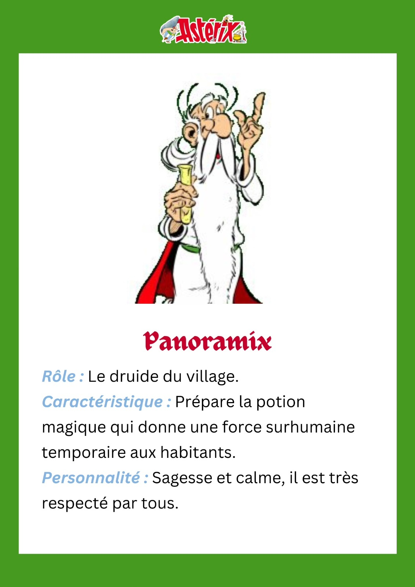
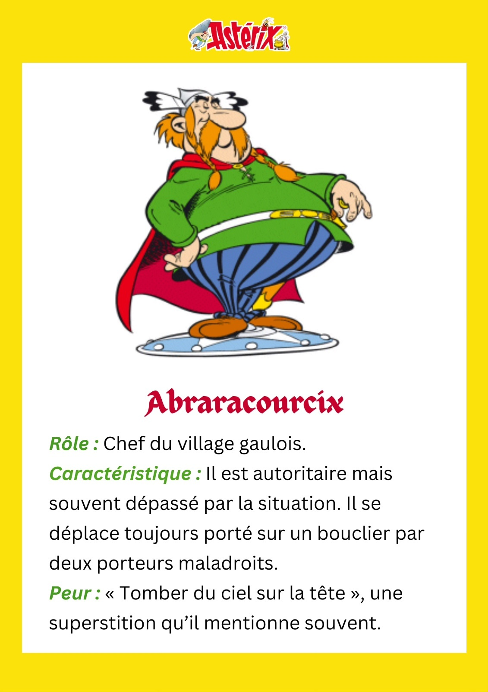
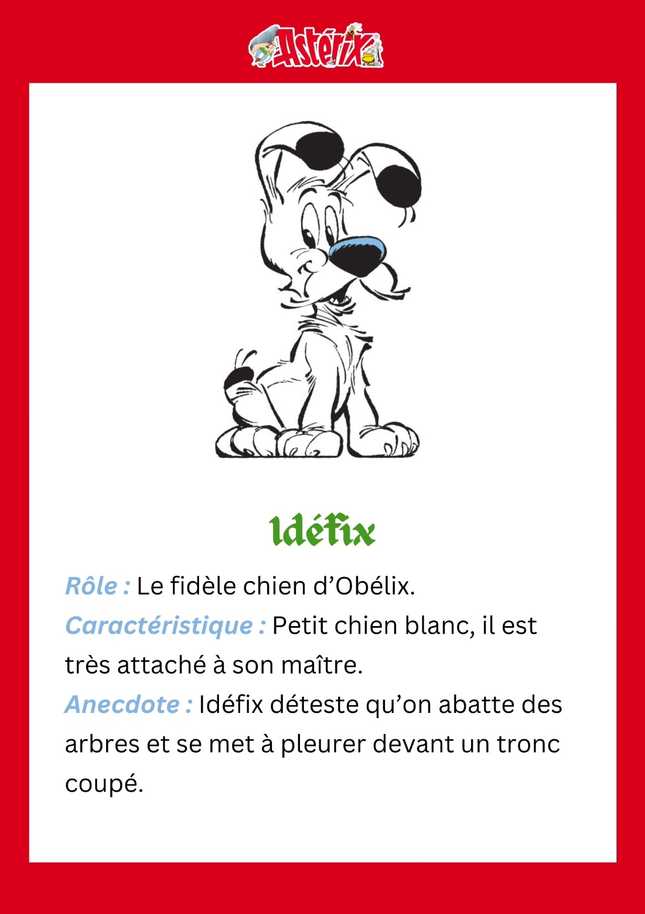
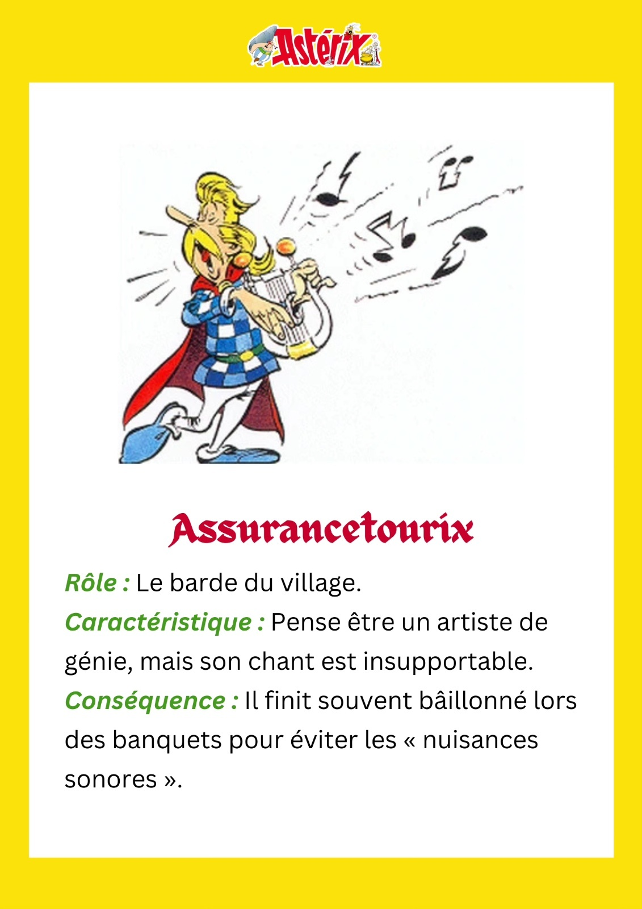
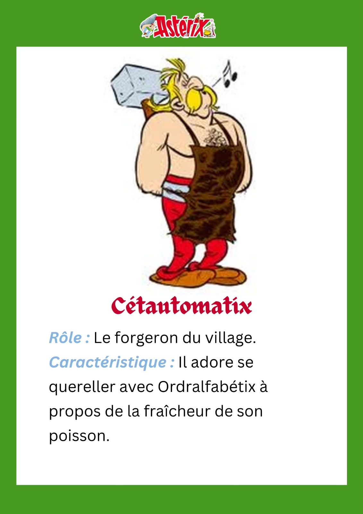
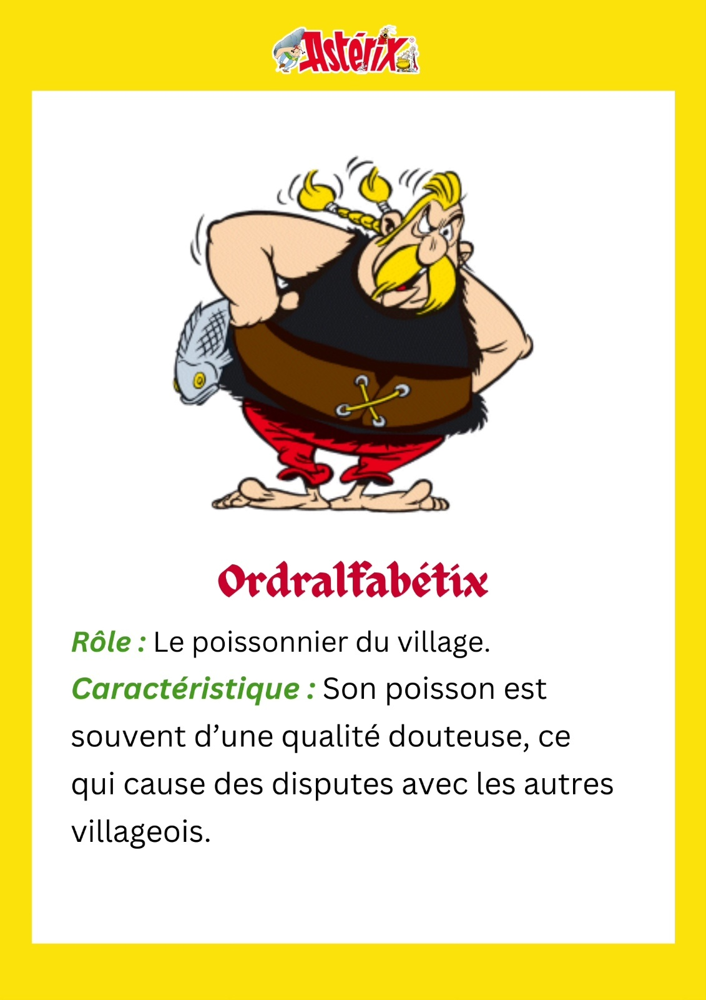
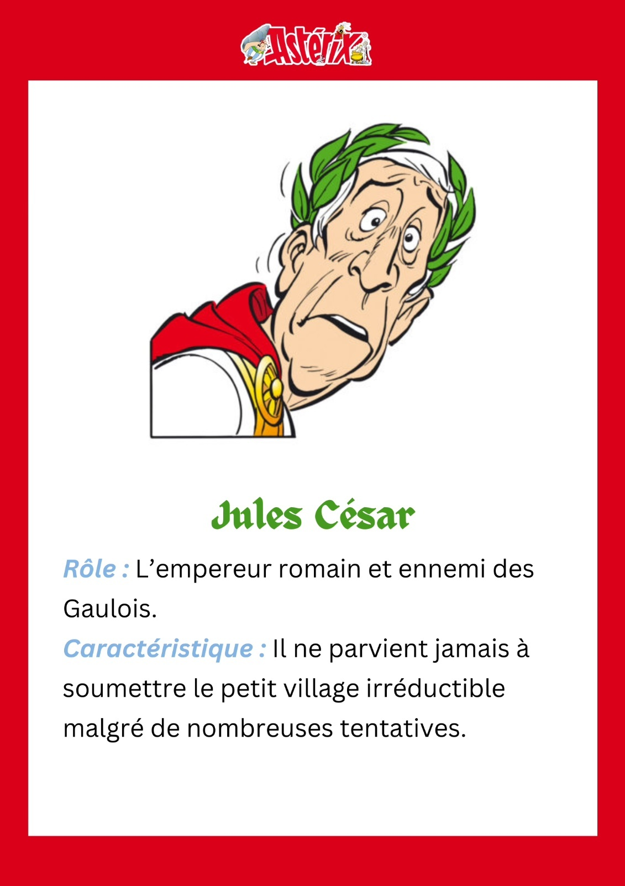

Présentation
Les protagonistes
Les personnages "secondaires"
Les BD les plus vendues et les adaptations en films
Les créateurs
Les personnages secondaires cultes







(Idéfix mon préféré 💛)
C'est quoi ton personnage préféré ?